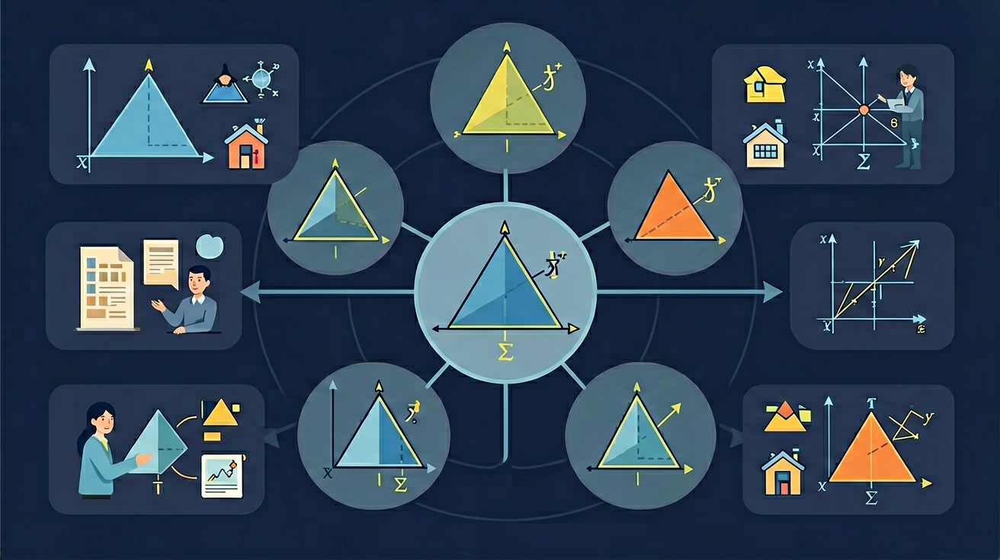

🎯 能说出三角形内角和定理及其证明方法
🎯 能判断三条线段能否构成三角形并说明依据
🎯 能分析三角形稳定性在实际生活中的应用
❓ 为什么三角形比四边形更稳？
❓ 三角形的三个角加起来一定是180度吗？
❓ 怎么判断三条边能不能组成三角形？
学完这一课，这些问题你都能自信地回答。
以下哪组线段能组成三角形？
三角形的内角和是？
1. 三角形有几条边？
2. 三角形三个内角之和是？
3. 有一个角是90°的三角形叫做？
三角形是由三条线段首尾顺次连接所围成的图形。
组成要素：三个顶点（A、B、C）、三条边（a=BC, b=AC, c=AB）、三个内角（∠A、∠B、∠C）
记作：△ABC
🏋️ 即时练习：三角形 △ABC 中，边 a 是？
锐角三角形
三个角都是锐角（< 90°）
直角三角形
有一个角是直角（= 90°）
钝角三角形
有一个角是钝角（> 90°）
等边三角形
三边相等（也叫正三角形）每角=60°
等腰三角形
有两边相等（含等边三角形）
不等边三角形
三边各不相等
🏋️ 即时练习：一个等边三角形每个角是多少度？
定理1：三角形内角和
△ABC 中，∠A + ∠B + ∠C = 180°
定理2：三角形三边关系
任意两边之和 > 第三边（a+b > c）
推论：任意两边之差 < 第三边（|a-b| < c）
🏋️ 即时练习：△ABC 中，∠A = 50°，∠B = 70°，则 ∠C = ？
🏋️ 即时练习：三条线段 3cm、4cm、8cm 能组成三角形吗？
已知一个三角形有一个角是 40°，另一个角是 65°。请完成下列任务：
1. △ABC 中，∠A = 90°，∠B = 35°，则 ∠C = ？
2. 三条线段 5cm、6cm、10cm 能组成三角形吗？
3. 等边三角形属于（按角分类）？
4. 一个三角形的外角等于？